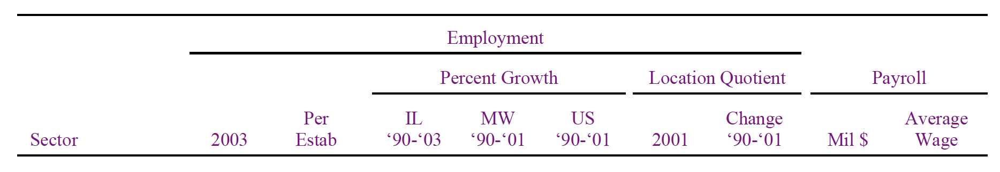

Communicating Quantitative Information
This document draws heavily from Dr. Ed. Feser’s Professional Writing by the Numbers: For Planners and Policy Analysts, Version 4.0 (2006). Updated content focuses on digital-first communication strategies.
Basic Communication Strategies
Memo Format
Memos are often used by urban planners to share information within their agency or with other planners and local government officials. Memos tend to be concise documents that may contain either requested information for staff or recommendations on how to debate or take action around a particular policy issue. Memos are built around clear and concise writing with a logical structure, clear illustrations and visualizations, proper formatting and spelling.
Memos start with a heading that includes the name of the memo author, name of the intended recipient, date, and a descriptive subject heading:
Memorandum
To: Janet Jacobs, Planning Director
From: Mae Q. Plannington, Planner 1
Date: October 7, 2022
Subject: Recommendation on Zoning Change for Holloway Parcel
A memo is typically written in response to something. The first paragraph of the memo should describe what the memo is responding to, and should summarize what the writer of the memo has done to prepare the response. The first paragraph should also summarize any key findings or recommendations.
Information within a memo should be organized in a logical fashion. Section headings with descriptive titles help your audience find particular information more easily.
General information should be presented first followed by more detailed information. As you support information with evidence, you should follow the same progression of general to specific.
Memos should conclude with a summary statement that encapsulates the key findings which you have come up with. If you are providing recommendations in your memo, this is also an appropriate place to re-state your recommendations, and provide instructions for how your memo recipient should follow up.
Because a memo is designed to be a concise document, you may have important additional information which would be useful to share, but which does not fit within the scope of the memorandum. Such items can be included in an appendix or attachment to the memo, and should be referenced as appropriate within the memo (e.g. “See the attached document for the property surveyor’s description of the Holloway parcel”).
Short Report Format
Present your analysis in the format of a short report or “data brief.”
Do Not Include Title Page
Title pages have their place in academic papers and larger, formal technical reports. However, they are inappropriate for memos and short data or policy briefs. Keep it simple.
No Conclusion Needed
In other contexts, you have likely been taught to include both introductions and conclusions as ways to help transition in and out of different sections. The memo format is more direct, and does not require the use of opening and closing paragraphs. State you case and let it go at that.
Notes and Citations
Use Notes for Technical Explanations
Footnotes or endnotes are best for stating brief technical explanations for methods and data. Reports may require a longer methodological appendix, but this is typically not appropriate for a memorandum.
Use Notes for Citations
Use an endnote or footnote to cite sources for memos and report briefs. Bibliographies or “Works Cited” lists are appropriate for longer reports or academic papers.
Combine Data Source Citations
It makes good sense to use endnotes or footnotes to discuss data used in an analysis in a memo or report brief. But you do not necessarily need to use a separate note for each data source or series. Instead, combine them by introducing one note early in the document. Something like: “The data used in this analysis are from the U.S. Census Bureau’s 2020 5-year American Community Survey and 2020 Census Household Pulse Survey”.
Formatting Considerations for Printing
Increasingly, memos and other routine planning communications are communicated digitally, however, it is important to prepare documents that will be legible when printed. In most circumstances, formatting considerations for printing will also apply to documents intended to be communicated digitally.
Left Justify Text
Use left justification for text, and not full justification.
Include Page Numbers
Include page numbers in the bottom center or bottom right of your page.
One Inch Margins
Use one inch margins on the left, right, top and bottom, including on all pages with tables and figures.
Twelve point font
Use a twelve point font, preferably something like Times for your text. You can use a ten point font for footnotes and endnotes. No text should be smaller than ten points.
Style
Awkward Sentence Construction
A catch-all category for a painful-to-read but not necessarily grammatically incorrect sentence. Sentence may be an affront to good writing style. Admittedly, professors often put AWK in places where they know something is amiss, but not being writing instructors, they’re not sure technically how to explain what is wrong. Bottom line: the sentence doesn’t work. Proofread yourself and then have someone else read to ensure clarity.
Write Directly
Don’t mince words: come out and say it. Instead of “The BLS and BEA data show that employment in the microchip industry is very small,” write “Employment in the microchip industry is very small.” Or, instead of “It is very important to note that data disclosure rules preclude reporting employment for all sectors,” write “Data disclosure rules preclude. . .”
Avoid Excessive Use of Jargon
Avoid the planner’s pitfall: too much use of all those fancy planning terms and acronyms. It’s not impressive or erudite, just boring.
Avoid Passive Voice
The extensive use of passive voice may be the single most common reason why a majority of sane individuals would rather walk on hot coals than read a technical document. Doesn’t “The region’s population growth dramatically outpaced the nation’s over the study period” sound better than “Using population data, it was found that the region grew much faster than the US over the study period”?
Another example: replace “A three-part analysis will be conducted in this paper” with “This paper will present a three-part analysis” or “In this paper, I will conduct a three-part analysis.” Reject passivity. Be active.
Use Active Headings and Subheadings
Use headings and subheadings to help organize your findings and discussion. In addition, keep ’em active and efficient. Instead of “Location Quotient Analysis” as a sub-heading, try a short title that conveys findings, e.g., “Region Specialized in Manufacturing and Services.” Headings and subheadings should never extend beyond one line of text.
Avoid Unnecessary Equivocation
Sometimes it makes sense to offer caveats or otherwise “hedge your bets” when discussing a finding. However, don’t overdo it. Population growth doesn’t “seem fast.” It either is or is not fast, relative to something else (which you should be comparing it to). A location quotient indicates whether a region is or is not specialized in a given industry; it does not indicate that the region “seems specialized” or “may be specialized.” On the other hand, location quotients do not say much beyond specialization (you would not damn the torpedoes and argue, on the basis of a manufacturing LQ above 1.2, that the region is “highly competitive” in manufacturing).
If you find yourself making equivocations, it’s worthwhile to revisit the evidence you’ve provided to make a point to ensure you’re making the strongest argument possible. Communicate that argument confidently, and provide appropriate caveats when necessary.
In Memos, Don’t Stay What You’re Going to Say
In academic papers or longer reports it often makes sense to provide a roadmap to the document (e.g., “This report begins by summarizing major trends in population. It then. . .”). The adage that you should “say what you are going to say, say it, then say what you said” doesn’t apply for short policy and analysis pieces. Just get on with the analysis and findings. Strong organization and active headings will help your reader infer how you’ll make your points.
Places Don’t Have Agency
In discussing social, economic, and demographic trends for neighborhoods, cities and regions, avoid implying that places have “agency.” Example:
El Paso shifted its population mix in response to major changes in Federal immigration policy.
In this case, El Paso as a collective, is being treated as an actor when it is actually simply a place with a collection of actors (people, households, businesses, organizations) who are reacting to the federal policy change in various ways.
It would be more accurate to say something like this:
El Paso’s population mix shifted in response to major changes in Federal immigration policy.
There may be cases when implying the place is an actor makes sense, for instance when you are discussing a community-wide strategy or policy.
Discuss Findings, Not Exhibits
People don’t want to read about figures and tables. They want to read about trends that matter from your analysis. Avoid discussing exhibits. Instead, discuss findings, referring to figures and tables as supporting evidence.
No: “Figure 1 shows that poverty in center city neighborhoods in Cleveland is increasing.”
Yes: “Poverty in center city Cleveland is increasing (see Table 1).”
Usage
Print and Proof
We increasingly have an imperative to produce, edit, and disseminate our work using a completely electronic workflow. This has its benefits, but you need to develop a workflow that allows you to edit your draft with diligence. Printing and proofing a document by hand can often catch errors that would otherwise become lost in digital copy - such mistakes often reveal themselves in embarrassingly stark relief once disseminated.
Define Acronyms on First Use
The first time you use an acronym (e.g., HUD), spell it out, followed by the acronym in parentheses. “Data are from the U.S. Department of Housing and Urban Development (HUD).” Then use the acronym to your heart’s content.
Write out Numbers Less than 11
Although sometimes the convention is that numbers one through ninety-nine should be spelled out. Numerals should be used for rates, percentages and other “data” indicators. Thus we would write “there are eight counties in the MSA,” but “the region grew by 8 percent.”
Spell out Numbers Starting Sentences
Any number that begins a sentence (or a bullet point) should be spelled out.
Watch Your Capitalization
No need to capitalize industries, occupations, or other sectoral-type categories. Do not over-capitalize. Note that when referring to a single county, write “Tehama County.” But writing about multiple counties, it is “Tehama and Shasta counties.” Also: the “City of New York” but the “cities of Palo Alto and San Jose.”
No Apostrophe on Dates
When referring to decades (e.g., 1990s), do not use an apostrophe.
Data are Plural
No: “The data is hard to find.”
Yes: “The data are hard to find.”
Use Proper Note Punctuation
Note numbers are best placed at the end of a sentence outside the punctuation.
Yes: This is a sentence that requires a citation.1
No: This is a sentence that requires a citation2.
Complete Sentences in Notes
Footnotes and endnotes should be complete sentences. Complete sentences have punctuation at the end.
Punctuation Inside Quotes
Punctuation generally goes inside quotes.
Yes: “Run, Tom, run,” said Jane.
No: “Down, Spot, down”, said Percival, Dick’s little-known cousin from Topeka.
Write out Percent
One of the few times the “less ink is better” rule is violated. Write “8 percent,” not “8%.” It’s less distracting to the eye.
Use Arabic Numbers for Notes
Microsoft Word often defaults to the use of Roman numerals for notes and endnotes (i, ii, iii. . .). Change this option and use Arabic numerals. More efficient.
Citing the URL is Not Enough
In the Internet age it has become distressingly common practice to cite only the URL for online documents. But consider this: if you quoted Tolstoy’s War and Peace using a copy you checked out from the New York Public Library, you would not cite the library as the source. The same principle applies to the Internet. For web sites, which are inherently Internet-based, you should list the name of the cite and then the URL. For documents accessed online, you should cite in the usual way (author, date, title, etc.) and then include the URL. Note that you are not obligated to list the URL for freestanding documents if you include the complete citation otherwise.
Avoid Ampersand (&) in Text
The symbol “&”, known as the ampersand, should not be used in your text write-up. It is ok to use it for labels in tables and figures.
Numbers
Interpret Quantities by Comparison
Do not just report growth rates, quantities and other indicators for individual places. They are hard to interpret by themselves. For example, to back up a claim that your region has faced substantial population growth in the last decade, contrast its growth rate with the national average growth rate.
Explain Regional Geography
The first time you mention your region, explain–either in the text or in a note–what its geographic composition is (e.g., its counties).
Significant Digits
Use numbers with levels of precision that match the realistic precision in the underlying data. Should a location quotient be expressed as 1.709? No. Round to the nearest tenth (1.7). Percentage growth rates for subnational areas are also usually best expressed with one decimal place. Shares can be converted to percentages and expressed to one decimal place to make them more readable.
Only Include Exhibits You Reference in Text
No table, figure, chart or line drawing should be included in the report or report appendix unless it is referenced somewhere in the text discussion. That reference may be very brief (“see Table 4”), but it has to be there (it could also be in an endnote or footnote). Think of it this way: if it wasn’t important enough for you to mention it, why did you include it?
Report the Quantity
Sometimes it is easy to forget to report the variable levels when we are analyzing variable trends. For example, it is common in analyses of wage trends (“wages are on the up and up”) to find nary a mention of wage levels. As a reader, you are left wondering “wages are going up, but are they high or low?” It is better to ground an analysis of changes in a given variable with a mention of the levels of the variable. So “The current annual average wage in River City for production workers is $27,500. That is up 12 percent in real terms since 1997. By contrast, the average production worker wage nationwide increased by 16.5 percent. . .”
Emphasize Significant Findings
When analyzing data we are looking for the most significant findings and often a “story” that helps explain those findings. In descriptive analysis, significance is often first assessed not in a statistical sense, but by looking for high and low values or major changes. But not all high/low values or large changes are necessarily important from a policy or planning point of view. Be careful to think through the potential implications of a finding before discussing it. Ask yourself: “So what?” If you can’t think of an answer, leave it out. (Example: “Since 1990, River City’s unemployment rate has registered below the U.S. rate in every quarter except IIQ 1996 and IVQ 1998” might be better stated as “River City’s unemployment rate has registered below the U.S. rate in 54 of the last 56 quarters.” A subtle change but the reader is not left asking: “Hmm, I wonder if I’m supposed to know why it was higher in those two periods?”
Percent versus Percentage Points
Let’s say you’re comparing the U.S. unemployment rate of 5.0 percent to the Peoria unemployment rate of 4.0 percent. Is the Peoria rate 1 percent lower than the national rate? No. It is 1 percentage point lower. A Peoria rate 1 percent lower than the national average would be 4.95 percent.
Refer to Exhibits in Text
Refer to your figures and tables directly in your text. Example: “Table 2 reports employment growth figures for the 1995 to 2003 period.” Or: “Employment growth was particularly strong in the retail and construction sectors (see Table 4).” If you are going to send readers to a table in a parenthetical phrase (like the last example), be sure to include the word “see.” So, you would not write: “Employment growth was particularly strong in the retail and construction sectors (Table 4).”
Tables, Figures and Graphics
Make ’Em so they Stand Alone
Figures, graphs and tables should be constructed so that they can stand alone (as much as feasible). That is, someone could pick up and read the table without the accompanying text and get the gist of what it is trying to say. It goes without saying that sources of all data and calculations should be clearly indicated.
Avoid Use of Grids in Tables
There is almost never any reason to include gridlines on a data table. Putting a line below the column headings and one below the last row of data, followed by the data source, is usually the best approach.
Decimal Justify Data Columns
Line up columns of numbers in tables on their explicit or implicit decimal points. Do not center justify numeric data.
Use Descriptive Column Labels in Tables
Remember the golden rule in table and figure construction: make it stand alone. That means column headings that someone can understand without reading the report body. Sometimes this is hard to do efficiently (headings can get too long). In such cases an alternative is to use short-hand headings but explain what they mean in a footnote to the table.
Use Label Hierarchies in Tables
A good way to make tables more efficient is to use hierarchical labeling of columns. In the table below, employment and payroll data for Illinois were available in 2003. But national and regional data were available only for 2001. The table efficiently reports the 2003 Illinois numbers along with national and Midwest growth rates for 1990-2001 and location quotients for 2001. A note at the bottom of the table should clarify how the Midwest is defined as well as what the reference area is for the location quotient.

Indicate Source on Figures and Tables
Data sources should be indicated clearly on all figures and tables.
Use Detailed Sources
For some series simply listing the data provider agency is not enough. For example, BLS reports several employment series. Therefore, list the series within BLS (or other) that you are using. For example, Regional Economic Information System, US Bureau of Economic Analysis, or Covered Wages and Employment, US Bureau of Labor Statistics.
Pie Chart? No Thanks
While seductive to the eye, pie charts are far less interpretable than a simple bar chart. Go for conveying your findings clearly, not spicing up your document with spurious graphical devices.
Shun 3-D
Three dimensional bar charts and other graphics generally should be avoided. They usually compromise proper interpretation of the findings. Keep it simple: no 3-D.
Call Tables “Tables” and Figures “Figures”
By convention, tables are called “tables” and graphics such as data charts or line drawings are called “figures.” Sometimes people use the word “exhibit” to label a line drawing. Avoid use of the terms “chart” and “graphic” for labels (e.g., Chart 1, Graphic 1). Also, never call a table a figure or a figure a table. Note that exhibit labels are generally capitalized: “Population trends for River City are summarized in Table 4.”
Sequence Tables and Figures in Order in the Text
If you have three tables, do not discuss Table 1, then Table 3, then Table 2. If the results in Table 3 are mentioned prior to those in Table 2, renumber the tables. Same for figures or any other exhibit.
Use Commas for Numbers
In data tables, include commas in the number formatting to denote significant digits. So: $47,500 instead of $47500.
Avoid Grids on Figures
Many graphical packages default settings include gridlines on charts. Most charts are simple enough not to need them to be clearly interpreted. Get rid of the clutter and save some ink!
Don’t Rely on Color
Remember that your best intents for people to view your document in color may be foiled - some individuals may print documents in grayscale, and others may be colorblind and unable to perceive all colors. That means your document should not depend on color to convey its findings. An example of depending on color would be to use red text in your tables to indicate negative values or any color to highlight interesting trends.
Report Numbers in 000s
It is ok to report very large numbers in thousands or even millions in tables if the precision in the original units is unnecessary. It is probably not critical in most cases for people to know that the US population changed by 1,456,789 over a given period (1.46 million will probably suffice). For small areas, such as counties and regions, reporting the original units is usually preferred except for large number variables (e.g., total dollar income).
No Superfluous Material
Avoid the practice of tacking on government documents or tables to your reports as “general points of information.” The idea in most professional writing is to convey maximum information with minimum material; tossing in nonessential material from secondary sources defeats that aim.